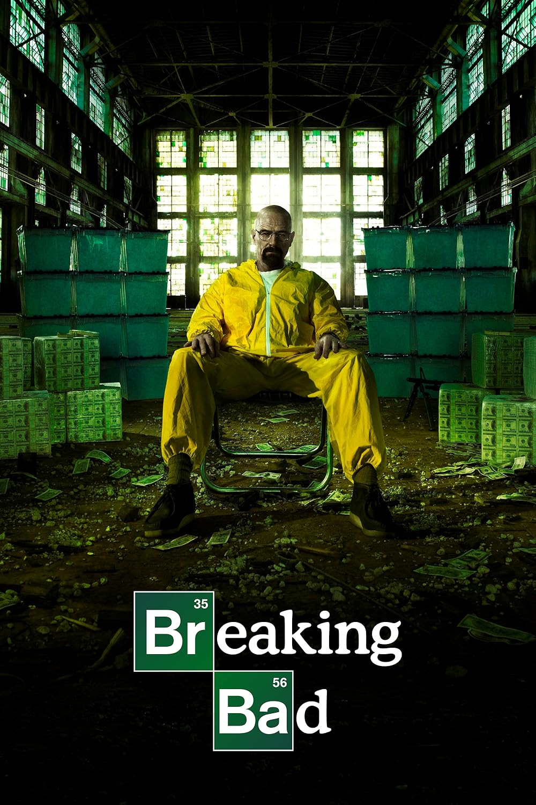

Breaking Bad es una serie de televisión creada por Vince Gilligan que sigue la transformación de Walter White (Bryan Cranston), un profesor de química de Albuquerque diagnosticado con cáncer terminal, en un despiadado fabricante de metanfetaminas. Con la ayuda de su exalumno Jesse Pinkman (Aaron Paul), Walter se adentra en el mundo del narcotráfico para asegurar el futuro económico de su familia. La serie explora temas de moralidad, ambición y las consecuencias de las decisiones personales, ganando aclamación por sus personajes complejos y su narrativa intensa.
